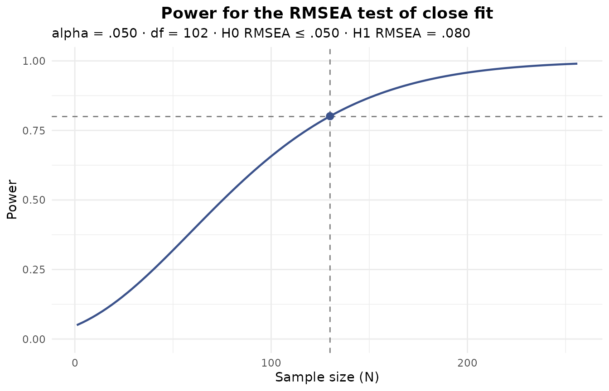
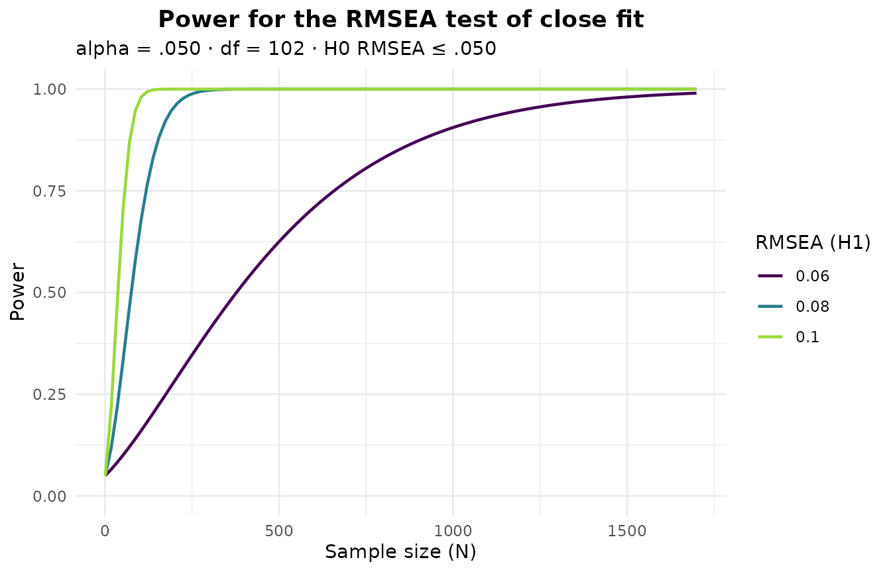

Simulating data and power analysis for EFA
Source:vignettes/articles/Simulation_and_power.Rmd
Simulation_and_power.RmdSimulation is the backbone of much of what we know about how
exploratory factor analysis behaves: which retention criterion to trust,
how large a sample a study needs, how badly non-normal or ordinal items
distort a solution. EFAtools gives you two tools for this
work. efa_simulate() draws data from a factor-model
population you specify, with realistic departures from the ideal – model
error, non-normal or ordinal marginals, missing values.
efa_power() answers the sample-size question, either
analytically from the RMSEA framework – which needs nothing but the
model’s dimensions – or by Monte-Carlo simulation of the whole
retain-and-fit pipeline on a population you specify.
Throughout we use a three-factor population with six indicators per
factor, taken from the shipped population_models data set
(a collection of factor patterns and factor intercorrelation matrices
used in simulation studies). All indicators load .6 on
their factor, and the factors correlate .3.
Lambda <- population_models$loadings$baseline # 18 indicators, 3 factors
Phi <- population_models$phis_3$moderate # factor correlations of .3Simulating data with efa_simulate()
Specifying the population
A population can be given in one of two mutually exclusive ways: as
the components of a factor model (Lambda, and optionally
the factor intercorrelations Phi and the unique variances
Psi), or as a ready population correlation matrix
R. With the model components, the population correlation is
assembled as
and standardized; when Psi is left unset it is filled in
with the unique variances that make the population a correlation
matrix.
sim <- efa_simulate(N = 500, Lambda = Lambda, Phi = Phi, seed = 42)
sim
#> ── Simulated data ──────────────────────────────────────────────────────────────
#>
#> 500 cases by 18 variables (continuous).
#> Marginals: normal.
#>
#> Model error: none (exact population).The drawn data sit in $data – here a 500-by-18 numeric
matrix – and the population that was drawn from in
$population.
dim(sim$data)
#> [1] 500 18
round(sim$population[1:6, 1:6], 2)
#> V1 V2 V3 V4 V5 V6
#> V1 1.00 0.36 0.36 0.36 0.36 0.36
#> V2 0.36 1.00 0.36 0.36 0.36 0.36
#> V3 0.36 0.36 1.00 0.36 0.36 0.36
#> V4 0.36 0.36 0.36 1.00 0.36 0.36
#> V5 0.36 0.36 0.36 0.36 1.00 0.36
#> V6 0.36 0.36 0.36 0.36 0.36 1.00If you only need the population correlation matrix – to inspect it,
or to feed it back in as an R population – set
return_pop = TRUE and no data are drawn:
R_pop <- efa_simulate(Lambda = Lambda, Phi = Phi, return_pop = TRUE)$population
# the same population can then be drawn from directly, via `R` instead of `Lambda`
sim_R <- efa_simulate(N = 500, R = R_pop, seed = 42)
dim(sim_R$data)
#> [1] 500 18Model error: realistic misfit
A population assembled exactly from a factor model fits that model
perfectly, which no real data set ever does. Simulating from an exact
population therefore overstates how well factor-retention criteria and
estimators recover the structure (MacCallum, 2003). To make a simulation
realistic, efa_simulate() can perturb the population with
model error so the factor model fits it only approximately, at
a misfit you control through target_rmsea and/or
target_cfi. Supplying a target is what switches model error
on; the achieved fit is computed with the same formulas
efa_fit() uses and returned in
$model_error.
sim_me <- efa_simulate(N = 500, Lambda = Lambda, Phi = Phi,
target_rmsea = 0.05, seed = 42)
sim_me
#> ── Simulated data ──────────────────────────────────────────────────────────────
#>
#> 500 cases by 18 variables (continuous).
#> Marginals: normal.
#>
#> Model error: CB
#> RMSEA: target .050, achieved .050
#> CFI: target --, achieved .936Three methods are available through model_error.
"CB" (Cudeck & Browne, 1992; the default) matches the
target RMSEA to numerical precision and keeps the factor model the exact
minimizer, so the CFI follows as a derived quantity:
c(rmsea = sim_me$model_error$rmsea, cfi = sim_me$model_error$cfi)
#> rmsea cfi
#> 0.0500000 0.9363534"TKL" (Tucker, Koopman, & Linn, 1969) adds minor
common factors and is the only method that can target the CFI – on its
own or, as here, together with the RMSEA, in which case it trades the
two off:
efa_simulate(N = 500, Lambda = Lambda, Phi = Phi, model_error = "TKL",
target_rmsea = 0.05, target_cfi = 0.95, seed = 42)$model_error[c("rmsea", "cfi")]
#> $rmsea
#> [1] 0.0455728
#>
#> $cfi
#> [1] 0.9479115"WB" (Wu & Browne, 2015) draws the population once
from an inverse-Wishart distribution around the model-implied
correlation. Being a single random draw, its realized RMSEA varies
around the target (and tends to exceed it), so the value is reported
rather than guaranteed:
efa_simulate(N = 500, Lambda = Lambda, Phi = Phi, model_error = "WB",
target_rmsea = 0.05, seed = 42)$model_error$rmsea
#> [1] 0.06530353Model error needs a factor-model population (there is no specified
model to misfit against a bare R) with residual degrees of
freedom and an exact factor structure (a diagonal Psi); it
is orthogonal to the marginal, ordinal, and missing-data options
below.
Non-normal marginals
By default the data are drawn with normal marginals. Real items –
especially Likert-type ones – are rarely normal, and non-normality
affects standard errors, fit indices, and the retention criteria.
efa_simulate() can reproduce the population correlation
while giving the variables non-normal marginals with a prescribed
skewness and (excess) kurtosis, via two methods.
marginals = "VM" is the Vale-Maurelli (1983) method:
sk <- function(x) mean(((x - mean(x)) / sd(x))^3) # skewness of one column
sim_vm <- efa_simulate(N = 500, Lambda = Lambda, Phi = Phi, marginals = "VM",
skewness = 1.5, kurtosis = 4, seed = 42)
round(c(target = 1.5, achieved = mean(apply(sim_vm$data, 2, sk))), 2)
#> target achieved
#> 1.50 1.57marginals = "IG" is the independent-generator method
(Foldnes & Olsson, 2016), which covers non-normal distributions the
Vale-Maurelli family cannot. Not every (skewness, kurtosis) pair is
attainable – every distribution needs excess kurtosis of at least
skewness^2 - 2, and each method covers a smaller region
still – so an unreachable request is rejected with an informative
error.
sim_ig <- efa_simulate(N = 500, Lambda = Lambda, Phi = Phi, marginals = "IG",
skewness = 1, kurtosis = 2, seed = 42)
round(c(target = 1, achieved = mean(apply(sim_ig$data, 2, sk))), 2)
#> target achieved
#> 1.00 0.96A third option, marginals = "empirical", reproduces the
population correlation while giving each variable the empirical
marginal of a supplied data set (Ruscio & Kaczetow, 2008) – useful
when you want your simulated variables to look exactly like real items.
Only the marginals of marginal_data are used; its own
correlations are ignored.
set.seed(123)
src <- matrix(rchisq(500 * nrow(Lambda), df = 3), ncol = nrow(Lambda)) # skewed source
sim_emp <- efa_simulate(N = 500, Lambda = Lambda, Phi = Phi,
marginals = "empirical", marginal_data = src, seed = 42)
# the drawn data inherit the shape of the source, not of a normal
round(c(source = mean(apply(src, 2, sk)),
simulated = mean(apply(sim_emp$data, 2, sk))), 2)
#> source simulated
#> 1.60 1.58Ordinal data
Setting categories discretizes the drawn data into
ordered categories – the ordinal items of a typical questionnaire. Give
it a single count (applied to every variable), one count per variable,
or a list of category-proportion vectors. How the categorization relates
to the population correlation is set by match.
With the default match = "thresholds", the data are cut
at fixed thresholds on the standard-normal scale. Categorization
attenuates product-moment correlations, so the categorized data’s
Pearson correlation is smaller in magnitude than the population
value:
sim_ord <- efa_simulate(N = 500, Lambda = Lambda, Phi = Phi, categories = 5, seed = 42)
# two indicators of the same factor: population vs. ordinal Pearson correlation
round(c(population = sim_ord$population[1, 2],
ordinal = cor(sim_ord$data)[1, 2]), 3)
#> population ordinal
#> 0.360 0.245match = "polychoric" instead requires the latent to be
normal, which is exactly the condition under which the
polychoric correlation of the categorized data equals the
target correlation. That is the guarantee you want when the downstream
analysis will use polychoric correlations
(efa_fit(..., cor_method = "poly")), because the estimated
correlation matrix then targets the true population rather than the
attenuated one. Because the guarantee rests on normality, the mode
refuses to combine with the non-normal marginals above – which is the
point of asking for it: under marginals = "normal" the draw
itself is the same one "thresholds" makes, so what you gain
is the check, not a different sampler.
sim_poly <- efa_simulate(N = 500, Lambda = Lambda, Phi = Phi, categories = 5,
match = "polychoric", seed = 42)
head(sim_poly$data[, 1:6])
#> V1 V2 V3 V4 V5 V6
#> [1,] 3 5 4 4 4 5
#> [2,] 1 2 2 5 2 1
#> [3,] 2 1 4 1 3 4
#> [4,] 3 5 5 4 5 5
#> [5,] 2 2 3 3 2 1
#> [6,] 4 4 2 4 3 3The recovery is a statement about the population polychoric,
so it shows up in a single sample only up to sampling error: at
N = 500 an individual polychoric estimate still scatters
noticeably around the population value, while the Pearson correlation
above is biased low no matter how large the sample grows.
At small N or with many categories a draw can leave a
category empty, which destabilizes the polychoric correlation;
efa_simulate() warns when that happens, so keep
N comfortably large for the number of categories
requested.
Missing data
missing imposes a missing-data mechanism (Rubin, 1976)
on the drawn data, holing each variable at an expected rate
missing_prop. "MCAR" masks values completely
at random:
sim_mcar <- efa_simulate(N = 500, Lambda = Lambda, Phi = Phi,
missing = "MCAR", missing_prop = 0.1, seed = 42)
round(colMeans(is.na(sim_mcar$data))[1:6], 3)
#> V1 V2 V3 V4 V5 V6
#> 0.104 0.104 0.120 0.100 0.098 0.102"MAR" makes each variable’s missingness depend on
another variable, and "MNAR" on the variable’s
own value, both through a logistic model whose slope is set by
missing_strength. The realized rate of a given draw varies
around the target.
sim_mar <- efa_simulate(N = 500, Lambda = Lambda, Phi = Phi, missing = "MAR",
missing_prop = 0.15, seed = 42)
sim_mnar <- efa_simulate(N = 500, Lambda = Lambda, Phi = Phi, missing = "MNAR",
missing_prop = 0.15, missing_strength = 1.5, seed = 42)
round(c(MAR = mean(colMeans(is.na(sim_mar$data))),
MNAR = mean(colMeans(is.na(sim_mnar$data)))), 3)
#> MAR MNAR
#> 0.149 0.149The returned matrix carries the NAs, which the
correlation estimators (pairwise deletion, FIML, and so on) handle
downstream. See the Ordinal and
missing data vignette for analysing such data.
Several datasets and reproducibility
For a simulation study you need many datasets from the same
population. Set n_datasets and $data becomes a
list:
sims <- efa_simulate(N = 300, Lambda = Lambda, Phi = Phi, n_datasets = 5, seed = 42)
length(sims$data)
#> [1] 5
dim(sims$data[[1]])
#> [1] 300 18Replicated draws are dispatched across replicates with
future.apply, so selecting a parallel plan with
future::plan() runs them in parallel; the default plan is
sequential. A fixed seed assigns each replicate its own
reproducible random-number stream, so the output is identical no matter
how many workers run it – and the same call twice gives byte-identical
data:
a <- efa_simulate(N = 300, Lambda = Lambda, Phi = Phi, seed = 42)
b <- efa_simulate(N = 300, Lambda = Lambda, Phi = Phi, seed = 42)
identical(a$data, b$data)
#> [1] TRUEThe seed is also restored afterwards, so the call leaves your own random-number stream untouched.
Power analysis with efa_power()
Analytic RMSEA power
The fastest power analysis needs no simulation at all.
efa_power() (in its default mode = "rmsea")
implements the RMSEA power framework of MacCallum, Browne, and Sugawara
(1996), which refers the fit statistic to a noncentral chi-square
distribution. Two tests are available. Under the test of close
fit, the null hypothesis is that the fit is close (RMSEA ≤
eps0, conventionally .05), and power is the
probability of rejecting that null when the true fit is worse
(eps1, conventionally .08) – that is, the
probability of detecting a model that is not close. The
test of not-close fit reverses the logic: its null is
that the fit is not close (RMSEA ≥ eps0), tested against a
better alternative (eps1, conventionally
.01).
Give a sample size to get the power at it. The model can be described either by its degrees of freedom directly or by its dimensions – here our 18-indicator, three-factor model:
efa_power(p = 18, k = 3, N = 200)
#>
#> ── RMSEA power analysis ────────────────────────────────────────────────────────
#>
#> Test of close fit: H0 RMSEA ≤ .050 vs. H1 RMSEA = .080.
#> alpha = .050 · df = 102
#>
#> Power = .958 at N = 200.
#> Critical value χ²(102) = 187.289 · noncentrality H0 = 50.745, H1 = 129.907.Leave N unset and give a target power
instead to solve for the smallest sample size that reaches it:
efa_power(p = 18, k = 3, power = 0.80)
#>
#> ── RMSEA power analysis ────────────────────────────────────────────────────────
#>
#> Test of close fit: H0 RMSEA ≤ .050 vs. H1 RMSEA = .080.
#> alpha = .050 · df = 102
#>
#> Required N = 130 for a power of .800 (achieved .801).
#> Critical value χ²(102) = 166.326 · noncentrality H0 = 32.895, H1 = 84.211.The test of not-close fit is selected with type (never
by the ordering of eps0/eps1):
efa_power(p = 18, k = 3, N = 200, type = "notclose")
#>
#> ── RMSEA power analysis ────────────────────────────────────────────────────────
#>
#> Test of not-close fit: H0 RMSEA ≥ .050 vs. H1 RMSEA = .010.
#> alpha = .050 · df = 102
#>
#> Power = .876 at N = 200.
#> Critical value χ²(102) = 121.042 · noncentrality H0 = 50.745, H1 = 2.030.For a multiple-group model, group divides the
noncentrality across groups. The reported N is the
total across groups – 259 in all, about 130 per group – and
N_per_group carries that per-group figure:
pw_2g <- efa_power(p = 18, k = 3, power = 0.80, group = 2)
pw_2g
#>
#> ── RMSEA power analysis ────────────────────────────────────────────────────────
#>
#> Test of close fit: H0 RMSEA ≤ .050 vs. H1 RMSEA = .080.
#> alpha = .050 · df = 102 · groups = 2
#>
#> Required N = 259 (total; 129.5 per group) for a power of .800 (achieved .801).
#> Critical value χ²(102) = 166.326 · noncentrality H0 = 32.895, H1 = 84.211.
pw_2g$N_per_group
#> [1] 129.5The plot() method draws power against sample size,
marking the object’s own result. When a sample size was solved for, it
marks the target power and the required N:

Sweeping the alternative RMSEA (or the degrees of freedom) overlays several curves, which is a compact way to see how the required sample size trades off against the effect you want to detect:

Simulation-based power
The analytic power above is about a fit statistic. Often the real
question is different: how often will my factor-retention criteria point
to the right number of factors, and how well will the fitted loadings
recover the true pattern, at a given sample size? That needs a
Monte-Carlo study of the whole pipeline, which is what
mode = "simulation" runs. It draws n_datasets
samples from the population (via efa_simulate()) and, over
the replicates, reports three things: the hit-rate of
each retention criterion (how often it recovers the true factor count),
structure recovery (how often the fitted loadings match
the population pattern by Tucker congruence), and the
convergence and Heywood-case rate of the fit.
By default the population fits the model exactly, which – as in
efa_simulate() – is optimistic. The printed summary says
so:
efa_power("simulation", Lambda = Lambda, Phi = Phi, N = 300,
n_datasets = 200, criteria = c("ekc", "map"), seed = 42)
#>
#> ── EFA power simulation ────────────────────────────────────────────────────────
#>
#> 18 variables · 3 factors · N = 300 · 200 datasets
#> Estimation: PAF · rotation: promax
#> Model error: none. The population is exact, so the hit-rate and recovery are
#> optimistic; set `target_rmsea` for realism.
#>
#> Retention hit-rate P(k-hat = 3)
#> • EKC_BvA2017: .995 (n = 200)
#> • MAP_TR2: 1.000 (n = 200)
#> • MAP_TR4: 1.000 (n = 200)
#>
#> Structure recovery (Tucker congruence ≥ .950)
#> • recovery rate (min congruence): 1.000 (n = 200)
#> • recovery rate (mean congruence): 1.000 (n = 200)
#> • median min congruence: .986
#>
#> Convergence
#> • fits completed: 1.000 (200/200)
#> • converged (of completed): 1.000
#> • Heywood cases (of completed): .000Supplying a misfit target makes the study realistic. In simulation
mode a target on its own activates model error with the
"TKL" method by default (it degrades both the hit-rate and
recovery in a realistic way, unlike "CB", which keeps the
fitted loadings the exact minimizer):
efa_power("simulation", Lambda = Lambda, Phi = Phi, N = 300,
n_datasets = 200, criteria = c("ekc", "map"),
target_rmsea = 0.05, seed = 42)
#>
#> ── EFA power simulation ────────────────────────────────────────────────────────
#>
#> 18 variables · 3 factors · N = 300 · 200 datasets
#> Estimation: PAF · rotation: promax
#> Model error (TKL): RMSEA = .050 · CFI = .936
#>
#> Retention hit-rate P(k-hat = 3)
#> • EKC_BvA2017: .385 (n = 200)
#> • MAP_TR2: 1.000 (n = 200)
#> • MAP_TR4: .970 (n = 200)
#>
#> Structure recovery (Tucker congruence ≥ .950)
#> • recovery rate (min congruence): .995 (n = 200)
#> • recovery rate (mean congruence): 1.000 (n = 200)
#> • median min congruence: .982
#>
#> Convergence
#> • fits completed: 1.000 (200/200)
#> • converged (of completed): 1.000
#> • Heywood cases (of completed): .000A few things to read off the output. The hit-rate is reported per
criterion, and per variant where a criterion has several (the
minimum-average-partial test reports its squared and fourth-power
variants, for example); its denominator is the number of replicates on
which the criterion returned a definite count, so a criterion that
errored or was undecided on some replicates is not silently penalised.
Structure recovery is available only for a factor-model population (a
bare R carries no loadings to recover); a replicate counts
as recovered when its matched-factor Tucker congruence reaches
recovery_threshold, which defaults to the .95
that Lorenzo-Seva and ten Berge (2006) read as factors that can be
considered equal. Here the strong .6 loadings make recovery
near-perfect even under model error, while the criteria disagree
markedly – exactly the kind of finding a power study exists to
surface.
On the number of datasets. We use
n_datasets = 200 here purely so the article builds quickly.
A real power study should use the default of 500, and
preferably more, to pin the rates down. We also evaluate only the two
fastest criteria, "EKC" and "MAP"; the
criteria that run their own internal simulation on every replicate –
comparison data ("CD"), the hull method
("HULL"), the next-eigenvalue sufficiency test
("NEST"), and parallel analysis ("PARALLEL") –
multiply the cost substantially. As in efa_simulate(), a
seed makes the whole study reproducible and independent of
the number of parallel workers.
Where to next
efa_simulate() and efa_power() carry more
options than shown here – per-variable moments, category proportions,
MAR predictors, the choice of estimator and rotation for the recovery
fit. See ?efa_simulate and ?efa_power for the
full argument lists and the structure of the returned objects, the EFAtools vignette for the analysis workflow
these studies evaluate, and the Ordinal and missing data
vignette for fitting the ordinal and incomplete data simulated
above.
References
Cudeck, R., & Browne, M. W. (1992). Constructing a covariance matrix that yields a specified minimizer and a specified minimum discrepancy function value. Psychometrika, 57, 357-369.
Foldnes, N., & Olsson, U. H. (2016). A simple simulation technique for nonnormal data with prespecified skewness, kurtosis, and covariance matrix. Multivariate Behavioral Research, 51, 207-219.
Lorenzo-Seva, U., & ten Berge, J. M. F. (2006). Tucker’s congruence coefficient as a meaningful index of factor similarity. Methodology, 2, 57-64.
MacCallum, R. C. (2003). Working with imperfect models. Multivariate Behavioral Research, 38, 113-139.
MacCallum, R. C., Browne, M. W., & Sugawara, H. M. (1996). Power analysis and determination of sample size for covariance structure modeling. Psychological Methods, 1, 130-149.
Rubin, D. B. (1976). Inference and missing data. Biometrika, 63, 581-592.
Ruscio, J., & Kaczetow, W. (2008). Simulating multivariate nonnormal data using an iterative algorithm. Multivariate Behavioral Research, 43, 355-381.
Tucker, L. R., Koopman, R. F., & Linn, R. L. (1969). Evaluation of factor analytic research procedures by means of simulated correlation matrices. Psychometrika, 34, 421-459.
Vale, C. D., & Maurelli, V. A. (1983). Simulating multivariate nonnormal distributions. Psychometrika, 48, 465-471.
Wu, H., & Browne, M. W. (2015). Quantifying adventitious error in a covariance structure as a random effect. Psychometrika, 80, 571-600.